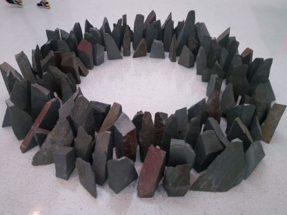

Quotes, Rants, Wisdom, Philosophy, Art Readings, Etc.
Contents
2022-05-14 - Carnegie Museum of Art
I recently chaperoned my high school art club's trip to the museum which has all new exhibits since the last time I visited. Here are some thoughts:
Working Thought
The first piece I see is the one I was looking for by MIT graduate Tomashi Jackson who combines vibrant colors on top of photographs using relevant materials to highlight lived experiences.
The first thing I notice in this depiction of the Johnstown Flood by Aaron Spangler is the use of pipes as an element in the overall Metropolis aesthetic. Perhaps unintentionally it showcases the irony of a city's destruction being caused by neglect of drainage infrastructure by a club comprised of railroad and steel elites who made their money selling infrastructure.
But otherwise, it's a fragile piece of infrastructure requiring small adjustments and maintenance - which helps explain why other works in the exhibit (Joe Minter) use wrenches as a primary element as opposed to other classes of found tools.
In the theme of maintenance, there's a film by Mierle Laderman Ukeles who I had who is known for highlighting the maternal duties of "maintenance" as opposed to the masculine task of "creation". It documented the June 21, 1992 performance of a ballet of barges with recyclables and towboats in Pittsburgh. One viewing platform barge was given a recycled glass diamond; another barge had a ziggurat of steel and aluminum; and the final barge had steel scraps. The two barges crossed between rivers then were "flopped". The towboats moved in choreographed circles in the Forks of the Ohio. Meanwhile, retired steelworkers performed choreographed movements in the Point State Park.
Towering up a wall are Moyra Davey's collection of decaying pennies photographed and individually mailed/put into circulation with a constellation of bright stickers. This series was sent to Carnegie because 1943 pennies were manufactured out of steel.
Locally Sourced
This collection of local craft creations includes a set of bowties by Knotzland based on museum collections and historic homes so of course I needed to take a picture.
Zoe Zenghelis: Fields, Fragments, Fictions
After looking around for a while, I talk to a volunteer, a former math major and daughter of a physicist, about the exhibit. Based on talking and later reading the 38-page program, I note that Zoe Zenghelis' practice is dreamlike abstract colorful architecture informed by emotion rather than the traditional black and white pragmatic practice.
I love the vibrant minimal forms in her architectural paintings emphasizing the placement of important planes with its almost-computer-generated aesthetic (SimCity or Rollercoaster Tycoon). In particular, I enjoy the simplification to the essence of a landscape design in Cassata after Parc de la Villette.
A Pittsburgh Anthology
One is supposed to purchase a $15 binder from the gift shop then collect cards about local artworks from around each room. In addition, there are cards where one may write and leave behind or take stories of visits to Pittsburgh from other visitors. Some highlights include "We are exploring the museum and trying to be artsy." and "Where is the bathroom?".
One piece I enjoy is this proposal, Piers Project: Pittsburgh: Steel Object, for a sculpture mimicking the design of coal processing structures to be a centerpiece of reclaimed public space.
Extraordinary Ordinary Things
This collection of home furnishings is focused around a collection of chairs. One that catches my interest in particular is this piece by Frank Gehry, architect of the MIT Stata Center.
The exhibit also has tables with books such as The Lucky, Plucky Chairs, a short story about Thonet No.14 chairs written by the chairman of a chair company followed by a guide to popular chair designs.
Because of my Big Mouth Billy Bass ugly Christmas sweater, I am drawn to Achille Barbizet's Monumental basin, a kitschy piece of Rusticware.
Another area highlights women in the Bauhaus movement including this serving platted by pioneering industrial designer Belle Kogan.
I also enjoy the simplicity of Jurgen Bey's Gardening Bench, a minimal blackbox device that extrudes a loaf of furniture.
Crossroads: Carnegie Museum of Art’s Collection, 1945 to Now
An entire room contains only a set of artist Park McArthur's used CPAP filters and walls with printouts of mirrored spirometer gradations so it looks as though one is being measured. I appreciate the incorporation of the aesthetics of measurement along with the emphasized dynamic architecture of air.
I am intrigued by Rachel Harrison's Utopia. On one side there's an explorer admiring a landscape and on the other there's a piece of fool's gold. The latter makes me think back to the book River of Shadows: Eadweard Muybridge and the Technological Wild West and the co-production of communication technology and artificiality.
I sit for a while at the Martha Rosler film A Budding Gourmet but the volume is a little too low to pay full attention. It appears to be images of cookbooks (actually food magazines) with sarcastic monotonous storytelling of the constructed commodity that is a cuisine.
Finally, I reach a piece documenting long walks like my own. Land artist Richard Long's Elterwater Stone Ring is a collection of 113 stones each representing a walk through the town of Elterwater. I enjoy the conceptual archival objects documenting large quantities of labor as opposed to land art's left-behind marks of having walked.

2022-04-17 The Canonization Manifesto: A Hypothetical Architecture Thesis
Canonization is any of a number of emergent phenomena whereby an abundance of knowledge is filtered into canonical narratives especially those encountered in a field of knowledge production. Wishing to emphasize the plural and coexisting nature of canons, note that, at every scale, individuals appear to filter and fit each piece of knowledge they come across into a personal narrative or head-canon. Due to this constant reinterpretation, describing the behavior of emergent unified narratives at a macroscopic level has led to many terms scattered across the fields of knowledge production. Thus I seek to perform some mathematics - once described as "the art of giving the same name to different things".
Rather than proposing a theoretical framework around canonization, my practice aims simply to aggregate perspectives that may be useful for studying their general role in the trans-disciplinary field of knowledge production consisting of art, science, design, engineering, craft, and surely others - as described by artists, philosophers, art historians, science historians, art critics, ethnographers, media ethnographers, anthropologists, sociologists, urban planners, psychologists, science technology and society scholars, practitioners in these fields, pedagogy researchers, outsiders, public perceptions, etc.
Some canonical narratives are intimately shaped by epistemologies - systems of verification, belief, and trust. These systems define the extent to which one outsources belief to others' narratives. These are particularly significant for looking at modernity since the Enlightenment as technology has consisted of more and more layers of abstract thinking. These are based on models one may call molecular or nuclear whose unraveling far exceed an individual's comprehension. In that sense, these are ways of grappling with the need to develop canonical narratives to live with an increasingly cyborgian existence.
Other canonical narratives rely on ontologies - systems of definition and understanding. These systems attempt to address questions of scale and scope - what constitutes the physical extent of an object and how far into an infinite regression of abstract or virtual properties and relationships one ought to consider. Related are critical frameworks which are canonical narratives one temporarily adopts to force oneself to analyze a particular perspective of a system or work of knowledge production. Others are considering the value of coexisting ontologies such as using indigenous or archaeologically rediscovered understandings which emphasize non-human species in order to consider conscious or sustainable design.
Practitioners of a field of knowledge production tend to utilize field-specific canonical narratives. Due to an abundance of tacit knowledge necessary to operate in an efficient manner, it seems reasonable to have a list of memorized surface-level maxims, axioms, posits, aphorisms, particularly useful results, and a common lexicon to begin the learning process. Hierarchical models of learning tend to call this learning the rules before one breaks them in a risky act of post-canonical synthesis. This is partially related to the necessity to identify with and be accepted within a field to avoid a state of schizophrenia. The inertia perpetuating choices of broad macroscopic ideas have been called paradigms consisting of a shared system of analogies one uses to understand their own work or epistemes emphasizing the power structures that reinforce them.
Outside of personal interpretations, some macroscopic changes in canonical narratives constitute deterritorialization where a nonlinear narrative has its context removed and is stated as a basic axiom, obscuring its construction, or compressed to a face of a concept. One particular example is the construction of an aesthetic i.e. naming a canonical set of visual cultural elements - especially anachronistic conglomerations. Other examples include appropriation of the word deterritorialization in this paragraph, commodification in general, and attempts to preemptively teach pragmatic models like the scientific method, writing process, or engineering design process without including practice in each context. This further separates the perception and reality of epistemological understanding perhaps to a level of foreign religious enchantment.
Possibilities of larger changes lie in post-modern re-configurations. Current ideas include archaeological reconstruction of canonical narratives and adjustment of practices - both with systematic awareness of the inertia of colonizing structures. Another is separating practices from economic desires for a growth imperative - which may allow time for discussions and practice opportunities which improve value and perception of fields of knowledge production and allow for more freedom to conduct experimental post-canonical development.
Finally, in accelerating society, the repetition of canonical responses rises to the level of noise leading to a question of how to deal with over-stimulation and schizophrenia - and the epistemological choice to outsource one's canonical narratives to others' algorithmic filters.
Relevant terms / possible table of contents
Ontologies, Actual, Virtual, Hyperobject, Infinite Regression, Modern, Euclidean, Cartesian, Colonial, Enlightenment, Revolution, Renaissance, Postmodernism, Epistemology, Phenomenology, Knowledge, Theory, Posit, Tacit Knowledge, Maxims, Aphorisms, Paradigm, Episteme, canonical Knowledge, Scientific Method, Engineering Design Process, Writing Process, Poetics, Cybernetics, Autopoesis, Sympoesis, Aesthetics, Systems Aesthetics, Nuclear Aesthetics, Becoming Molecular, Cyborg, Embodiment, Identification, Schizophrenia, Archaeology
2021-05-24 Interesting Readings from Studio Seminar in Art and the Public Sphere: Nuclear Aesthetics
The Nuclear
Sven Lutticken (2018). Shattered Matter, Transformed Forms: Notes on Nuclear Aesthetics, Part 1. e-flux.
Sven Lutticken (2019). Shattered Matter, Transformed Forms: Notes on Nuclear Aesthetics, Part 2. e-flux.
Ele Carpenter (2016). "Nuclear Modernity". The nuclear culture source book.
The Experiment
Silvia Casini (2020). "The Culture of Experimentation: Fiction, Craftsmanship and Imagination". Altrove: New Fictions
Karen Barad (2007). Meeting the universe halfway: Quantum physics and the entanglement of matter and meaning.
Andrew Pickering (2016). "Art, science and experiment". Metropolis M Books: Experimentality.
Relations to the Virtual and the Hyperobject
Gilles Deleuze (1977). "l'actuel et le virtuel". Dialogues II.
Eric Kluitenberg (2012). "Techno-Ecologies Inhabiting the Deep-Technological Spheres of Everyday Life". Techno-Ecologies. Acoustic Space #11.
Donna Haraway (2016). Tentacular Thinking: Anthropocene, Capitalocene, Chthulucene. e-flux.
Ursula Le Guin (1986). The carrier bag theory of fiction.
The Public Space
Bruno Latour (2008). "A cautious Prometheus? A few steps toward a philosophy of design"Proceedings of the 2008 annual international conference of the design history society.
Adrian Blackwell (2017). "The Paradoxical Structure of Public Space". Public space? : lost and found. MIT Press.
2021-05-24 Interesting Readings from Exploring the Dramatic Imagination
Audre Lorde (1977). Poetry is not a luxury.
Octavia Butler (1996). "Furor Scribendi". Bloodchild and Other Stories.
Italo Calvino (1978). Invisible cities.
Nicholas Paley (1988). Kids of Survival: Experiments in the Study of Literature.
Caridad Svich et al. (2009). The Legacy of Maria Irene Fornes: A Collection of Impressions and Exercises.
Andrea Liss (2009). "Maternal Care: Mierle Laderman Ukele's Maintenance Art". Feminist Art and the Maternal.
Mary Overlie (2016). "Standing in Space." The Six Viewpoints Theory and Practice.
Allan Kaprow (1997). Just Doing.
2020-08-17 - Resources for Walking as an Academic Practice
- My Walking Map for reference.
- Chucho (Jesús) Ocampo Aguilar, a fellow walking artist in MIT's Program in Art, Culture, & Technology, recommended Francesco Careri's Walkscapes as it informs his Practice. It begins by introducing the role of nomadic goers as opposed to sedentary stayers in the history of architecture, followed by an overview of modern walking art, focusing on Dada Visites, Surrealist deambulations, and Letterist/Situationist Dérives. It ends with modern architectural Land Art practices.
- A substantial number of works on walking have been reviewed here and on other blogs.
- An exploration of every street in NYC by Matt Green is documented here and in the walkumentary, The World Before Your Feet.
- Also featured in this walkumentary is a fellow walker and former MIT MLK Scholar, Garnette Cadogan, writer of the essay Walking While Black on the role of race in the walking experience.
- In the more anthropological direction, Tim Ingold writes on the cultural significance of Lines while part of the collective The Walking Institute which hosts academics on journeys through Scotland.
- In a more athletic vein, a few individuals known as Centurions have continued the tradition of pedestrianism, walking 100mi in one day. (Others have taken on the simpler Kennedy March as proposed by JFK in Sports Illustrated to promote physical education - the Centurion Society providing Kennedy March medals if completed in 12 hours).
- These walks involve relaxed versions of Racewalking rules, no loss of contact and full leg extension, which ultimately limit the race to a track so judges can stare at the racers' legs. Slow-motion cameras were banned it was determined every racewalker was losing contact already and the standard was reduced.
- Walks can be tracked to some capacity on Google MyMaps but you're limited in layers and exports. There are other programs designed to integrate with biometric sensors or to explore other individuals' walks which are not part of my performative practice.
- Of course, if you would walk 500mi and you would walk 500 more and then 500 more and your significant other would too just to break up, look no further than Marina Abramović & Ulay
- Even more references: Long Distance, Long Distance, Long Distance, Long Distance, Roaming, Roaming, Walk Art, Art Walks, Art Walk, Walk Art, Art Walks
2020-05-15 - Interesting Readings from Art, Craft, Science
For a list of propositions about skills, see
James Feibleman (1966), "Technology as Skills," Technology and Culture 7(3): 318-28
For a summary of theoretical models of competency, see
Nicholas Farrar and Gill Trorey (2008) "Maxims, Tacit Knowledge and Learning: Developing Expertise in Dry Stone Walling," Journal of Vocational Education and Training 60(1): 35-48.
For an anxiety-inducing anthropological investigation into a craft, see
Erin O'Connor (2007) "Embodied Knowledge in Glassblowing: The Experience of Meaning and the Struggle Towards Proficiency." The Sociological Review 55(s1): 126-141
For our new reality TV show, The Real Hackermoms of Berkeley Hills, see
Daniela K. Rosner and Sarah E. Fox (2016) "Legacies of Craft and the Centrality of Failure in a Mother- Operated Hackerspace," New Media & Society 18(4): 558-80
Postmodern Discussion:
To experience a tirade against abstract materiality, see
Tim Ingold (2007) "Materials Against Materiality," Archaeological Dialogues 14(1): 1-16
For a discussion of art value as a social religion, see
Alfred Gell (1992) "The technology of enchantment and the enchantment of technology," in Anthropology, Art, and Aesthetics, Jeremy Coote and Anthony Shelton, eds., pp. 40-63
For a discussion of tacit knowledge as social elements and acceptance criteria untranslatable via technology, see
Harry Collins (2001), "What is Tacit Knowledge?" in The Practice Turn in Contemporary Theory, Theodore R. Schatzki, Karin Knorr-Cetina, and Eike von Savigny, eds., pp. 107-119
For a discussion of the dangers of separating scientific process from results, see
Sebastian Abrahamsson, Filippo Bertoni, Annemarie Mol and Rebeca Ibanez Martín (2015) "Living with Omega-3: New Materialism and Enduring Concerns," Environment and Planning: Society and Space, 33:4-19
2020-05-15 - Interesting Readings from Earlier Art Classes
For weird artist behaviors:
Mark Elizabeth Richards (2010) "Practical Explorations and Their Origins" in Marina Abramovic
Helen Molesworth (1998) "Work Avoidance: The Everyday Life of Marcel Duchamp's Readymades"
For anyone trying to make a game who wants different perspectives:
Katie Salen and Eric Zimmerman (2003) Rules of Play: Game Design Fundamentals
Brian Sutton-Smith (1997) "Play and Ambiguity" in The Game Design Reader: A Rules of Play Anthology
For longer postmodern reading:
William Tucker (1974) "The Object" in The Language of Sculpture
Rosalind E. Krauss (1996) The Optical Unconscious
Thomas S. Kuhn (1970) The Structure of Scientific Revolutions
Donna Haraway (1976) Crystals, Fabrics, and Fields, Metaphors of Organicism in Twentieth-Century Developmental Biology
Gilles Deleuze and Felix Guattari (1988) A Thousand Plateaus: Capitalism and Schizophrenia
2020-15-05 - Interesting Readings from Advanced Workshop in Artistic Practice and Transdisciplinary Research: Interspecies Ecologies
Cybernetics, framing modernism:
Andrew Pickering (2009) Beyond Design: Cybernetics, Biological Computers and Hylozoism
Andrew Pickering (2016) The Ontological Turn: Taking Different Worlds Seriously
William Ross Ashby (1960) Design For A Brain
Brian Eno (1976) "Generating and Organizing Variety in the Arts"
Postmodernism, Autopoesis, Sympoesis:
Excerpts in Edward Shanken (2015) Systems. MIT Press:
Fritjof Capra (1988) "Physics and the Current Change of Paradigms"
Norbert Weiner (1950) "The Human Use of Human Beings"
James Lovelock (1989) "Geophysiology: The Science of Gaia"
Mitchell Whitelaw (2005) "System Stories and Model Worlds"
Bruno Latour (2014) "Some advantages of the notion of 'Critical Zone' for Geopolitics"
2020-03-25 - Thesis Vector
Where I've learned what a thesis statement is:
- 5th grade English
- 6th grade English
- 7th grade English
- 8th grade English
- 9th grade English
- 10th grade English
- 11th grade English
- 12th grade English
- 21W.031
- 4.601
- MAS.377
- 8.06
Where I've learned what a vector is:
- Algebra I
- Teaching myself vector calculus
- Teaching myself classical mechanics for the first time
- AP Physics
- 8.012
- 18.022
- 18.700
- 8.05